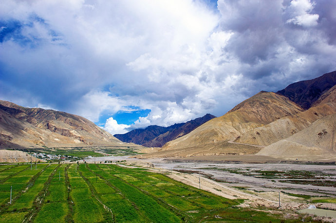
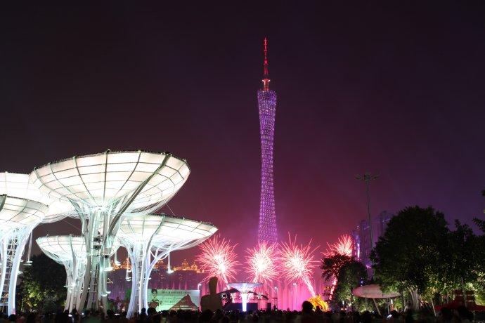
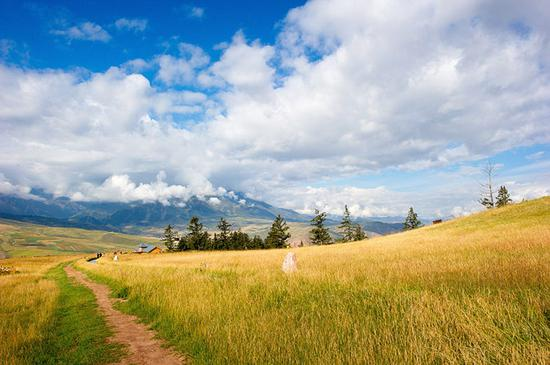

|
 |
风光壮美的中国尼泊尔普兰边境 一河之隔却犹如两处天地 |
| 西藏阿里地区的普兰县，地处中国与印度、尼泊尔三国的交界处，是我国漫长边境线上为数不多的三国交界县（全中国只r有12个这样的县），因此普兰自古以来就是西藏重要的对外贸易通道，县城甚至有一个“国际市场”…… | |
| 头像 一柄锈剑 |
|
 |
经历超强台风山竹后，世界第二高塔安然无恙，让全球看到真正的中国造 |
| 从网上及相关媒体报道中可以看到，当9月16日登陆我国的台风“山竹”让沿途多地遭受重创时，广州塔（又名小蛮腰）上的霓虹灯依然在狂风暴雨中绽放光彩，塔身上还不断地放映“敬畏自然 珍惜生命”“注意安全 祝您平安”等公益广告…… | |
| 光光墨客 |
|
 |
国内媲美欧洲瑞士的小县城，拥有绝美的山顶草原 |
| 每年的九月，是北方和西北地区秋色争相斗艳之时，身居南方的我，秋色来得太迟，只好年年往外跑到处去秋游，今年来到了青海自驾。我们从西宁出发，先前往和政，翻越达坂山，经过门源，横穿祁连大草原，一路都是美景。…… | |
| 一起去旅行 |